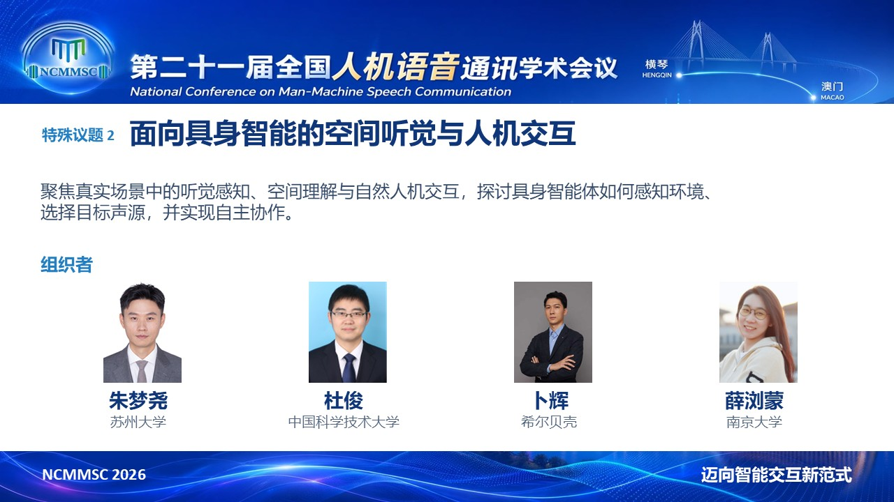
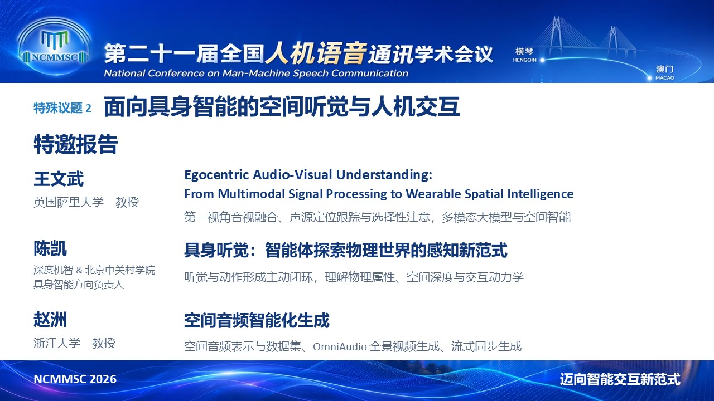
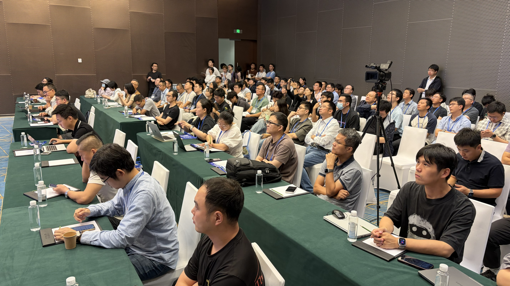

2026年11月5日至8日 · 珠海横琴
团队参与组织 NCMMSC 2026 特殊议题“面向具身智能的空间听觉与人机交互”
2026年11月5日至8日，第二十一届全国人机语音通讯学术会议（NCMMSC 2026）在珠海横琴成功举办。苏州大学朱梦尧老师、中国科学技术大学杜俊老师、希尔贝壳卜辉老师和南京大学薛浏蒙老师共同组织特殊议题2“面向具身智能的空间听觉与人机交互”，聚焦真实场景中的听觉感知、空间理解与自然人机交互。特邀报告吸引了众多感兴趣的老师和同学，现场交流热烈，为相关领域研究者提供了分享成果、交流思路的平台。
据会议公布的统计数据，“具身智能空间听觉与交互”特殊议题共收到11篇投稿，录用7篇，录用率约为63.6%。投稿量占全部6个特殊议题总投稿量（54篇）的20.4%，位于各特殊议题前列。
特殊议题组织者

特邀嘉宾及报告主题

报告资料
以下标题以报告文件封面为准，活动预告主题见上方嘉宾介绍。
王文武 · 英国萨里大学
Egocentric Audio-Visual Understanding: From Multimodal Signal Processing to Wearable Spatial Intelligence
下载 PDF ↓5.1 MB
陈凯 · 深度机智 / 北京中关村学院
物理智能的多模态基础
下载 PDF ↓2.1 MB
赵洲 · 浙江大学
空间音频合成研究
下载 PDF ↓4.2 MB
特殊议题报告现场，吸引了众多感兴趣的老师和同学。
